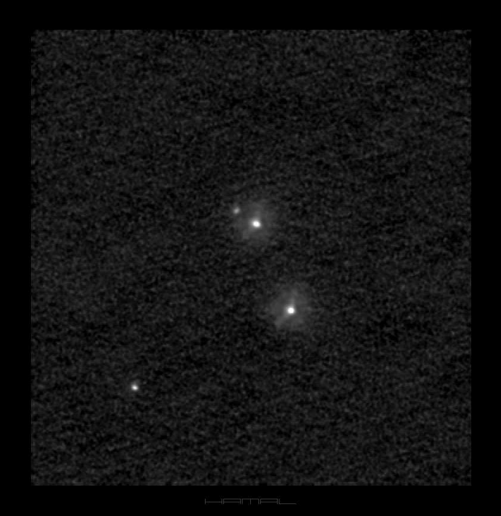
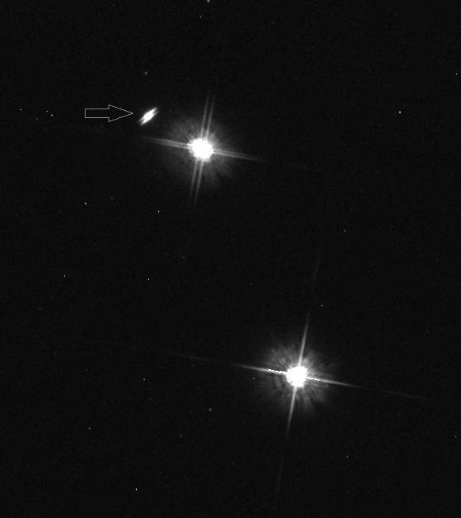

High Resolution Astrophotography

LkHa 263 C | LkHα 263 system - LkHα 263 AB - LkHα 263 C
-
in the constellation Aries
Parameters -
Detector -
Filters -
Optics -
Mount -
Concept -
xs
ASI 290MM-C
none
Homemade Newton 320/1500 Truss Telescope
Homemade English Yoke Mount
DIAVS
For comparison, HST imaging.
